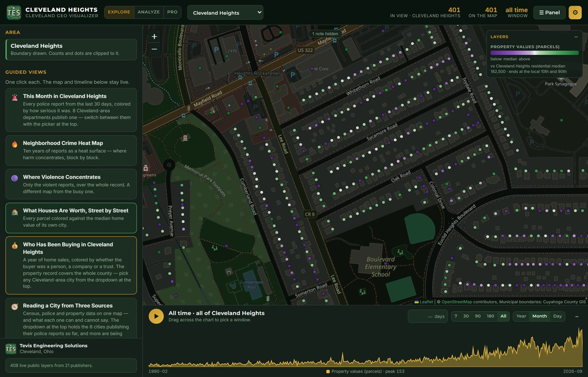
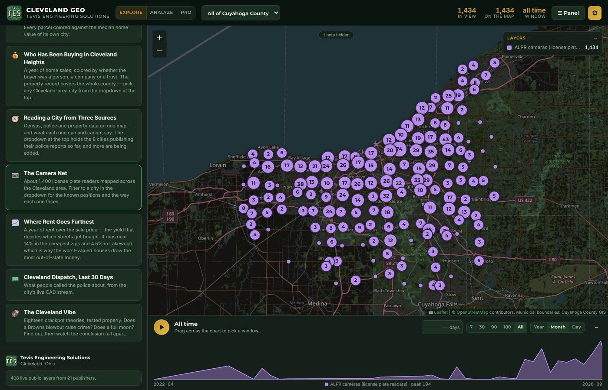
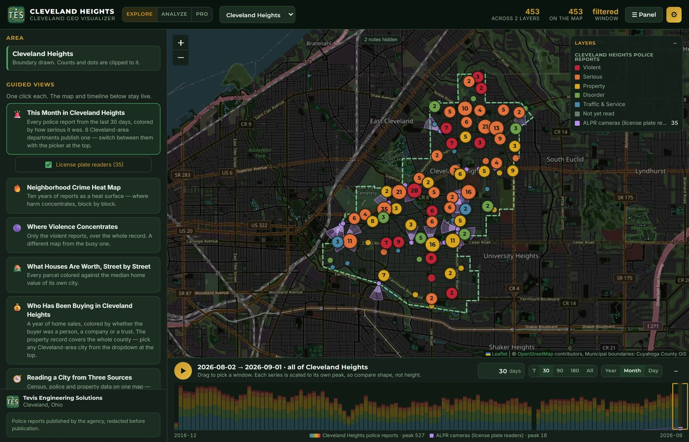
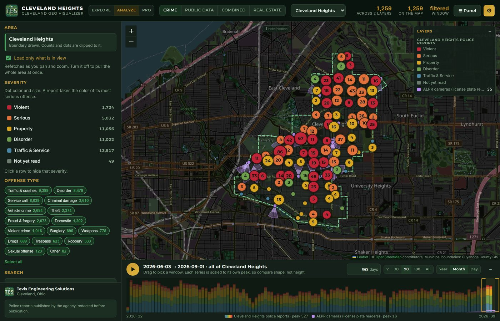

Cleveland Geo Visualizer Every Public Dataset, One Map
What houses are worth and who has been buying them. Which parcels are tax-delinquent, condemned or in foreclosure. Building permits, code violations, vacant structures. Police reports from eight departments, Cleveland’s live dispatch stream, and about 1,300 license-plate cameras. All of it from county and city open data, on one map, on one timeline you can scrub through ten years of. Free, no sign-up, and refreshed every night.
The point is not any one layer. It is that you can stack any of them on top of each other, drag one timeline, and see what lines up. Pick a question and go find out.
The map itself is on this page. Best on a desktop. Everything on it comes from a public agency; police reports can lag the department by days and this is not an official source. Jump to the map.
Try it — the map, live
Start in Explore and click through the guided views. When one of them makes you curious, press Open in Analyze, add a second dataset from the catalog, and drag the timeline. Click any dot or parcel to read the record behind it.
What you can put on the map
More than 150 live layers from 21 public publishers, plus a nightly police-report feed. Every one of them stacks with every other. A few of the groups:
Property and real estate
Every parcel colored against its own city’s median value. A year of sales, colored by whether the buyer was a person, a company, a trust or a bank. Tax delinquency, foreclosure, forfeited land, condemned structures. Comparable sales, appeal candidates and rent yield by street, from any parcel’s dossier.
License-plate cameras
About 1,300 automated readers county-wide, each with the direction it faces and when it went in, from a public crowd-sourced register. Filter to a city, then lay the net over anything else and see what the cameras face and what they miss.
Police reports
Every published report from eight departments, colored by its most serious offense. Ten years deep for Cleveland Heights. Search by street, offense, report number or officer. Cleveland itself publishes calls for service instead, so its police, fire and EMS dispatch is on the map live.
Permits, code and housing
Building and demolition permits, code violation notices, vacant structures, rental registrations, lead-safe certificates, land bank lots, tax abatement areas. Where a block is turning, and which way.
Streets and crashes
Traffic crashes countywide and in detail for Cleveland, pedestrian and bicycle crashes, traffic counts, the street safety priority index, transit reach, the bike network as it is and as it is planned.
Context
Census tracts and block groups, poverty rate, food access, jobs reachable by transit, the 1940 HOLC redlining grades, zoning, ward and precinct lines. The denominator for everything else, so a count can become a rate.





Stacks worth trying
Nobody has looked at most of these combinations before, because the data has never been in one place. Here are a few to start with. Every one takes about a minute in Analyze, and none of them needs an account.
Who is buying the distressed blocks
A year of sales colored by buyer type, over tax delinquency and foreclosure. Watch where the LLCs and trusts cluster, and whether that matches where the individual buyers are.
What the cameras face
The license-plate net over ten years of police reports as a heat surface. Where the readers are and where the harm is are two different maps, and the overlap tab will tell you how different.
Calls are not crimes
Cleveland’s live dispatch stream against confirmed reports next door. Most calls are never founded, and a map of calls looks nothing like a map of what actually happened.
Where a block is turning
Building permits over vacant structures and land bank lots, with the timeline dragged back a few years. Investment shows up in permits first, long before it shows up in prices.
Rentals and code enforcement
Rental registrations over code violation notices and lead-safe certificates. Whether the blocks with the most rentals are the blocks getting inspected.
The Cleveland Vibe
A guided view that tests eighteen bad theories properly: whether a Browns blowout, a full moon, a snow day or Friday the 13th moves the numbers at all, and by how much. See which ones survive.
Police reports: which departments are covered
The police-report layer is the one part of the map we build ourselves rather than read live. Only departments that publish their reports to a public portal can be on it, and only from the date their portal starts. This table is read from the live feed, so it says what the map says.
| Department | Reports mapped | Covered |
|---|---|---|
| Cleveland Heights | 42,908 | 2016-12 → 2026-09 |
| Euclid | 12,060 | 2014-01 → 2026-09 |
| North Olmsted | 6,640 | 2017-01 → 2026-08 |
| Shaker Heights | 3,072 | 2004-04 → 2026-09 |
| Richmond Heights | 2,331 | 2005-01 → 2026-03 |
| Solon | 1,900 | 2013-04 → 2026-01 |
| Parma Heights | 1,260 | 2021-01 → 2026-08 |
| North Randall | 625 | 2022-01 → 2026-09 |
70,796 reports across 8 departments. Feed built 2026-09-14.
How names and addresses are handled
The source is public. That does not make every detail in it something a map should repeat.
- Civilian names are never published. The police portals print the names of people involved in crash reports. Those are private individuals who did not choose to be on a map, and the export strips them in every category.
- Some calls are withheld entirely. Medical transports, attempted suicide and death investigations are dropped from the public build, because their location would expose a private episode in a private home.
- Sensitive reports are shown at the block. Sexual-offense and domestic reports get a hundred-block address, 24XX Noble Rd, and a dot placed within about a hundred meters, never on the house.
- Officer names stay. They are the public acts of public employees, printed on a report the department itself publishes. That is a different thing from a victim’s address.
- Parcel owners are the county’s record. The owner of record on a parcel comes live from the county fiscal officer, the same as on the county’s own site, and is not stored by us.
- Something wrong? If a record on the map identifies someone it should not, use the suggestion box with A data problem selected and it will be looked at that day.
Tell us what to add
A dataset you wish was on the map. A department whose reports we should be reading. A stack you built that says something. A feature that would make your own analysis easier. This box goes straight to the engineer who builds it.
The same engine, on your data
Nothing here is specific to Cleveland, or to any one kind of data. The map reads any open-data service, puts it on a shared timeline, and stacks it with everything else. What changes is whose data, and what question it is built to answer.
Cities and counties
An open-data portal residents actually use. Permits, code cases, service requests and dispatch on one map, on your own domain, with the privacy rules written down and enforced in the export.
Realtors and investors
Parcels against the local median, a year of sales colored by who bought them, tax-delinquency and appeal candidates, rent yield by street. The property record for a whole county, filtered to a block.
Newsrooms
An embeddable, self-updating map for a beat: housing, development, public safety. Guided views written for the story, the raw layers one click below them, and a data feed your readers can check.
Law firms and insurers
Crash and incident geography by corridor and by month, with the public record behind each dot. Where the same intersection keeps coming up, and when.
Community groups
A neighborhood’s own view of its own data, kept current without anyone maintaining a spreadsheet. Print a month for the meeting; link the map for everyone who could not come.
You own it
A fixed-price build you keep, or a hosted service we run. No per-seat licensing, no per-view metering. The feed format is documented so your data is never locked inside our tool.
How a custom build works
We find what your city, county or agency already publishes, what it would take to read it, and what in it must not reach a map. You get that in writing before anything is built.
Which fields, at what precision, refreshed how often, with which categories masked or withheld. The rules this map runs on, adapted to yours.
The map, the guided views written for your questions, and an export that refuses to publish anything the contract forbids. Checked twice, by two separate audits, before every refresh.
On your domain, refreshing on its own with no one on duty. Yours to keep, or ours to run for you, with an alert to a human only when something breaks.
Common questions
Is this a crime map?
Where does the data come from?
How do I do my own analysis?
Is any of this official?
How current is it?
Why do some reports show a block instead of an address?
Can I suggest a dataset or a feature?
Can I embed the map or get the data?
Can you build something like this for us?
Build one for your city, newsroom or firm
Tell us whose data it is and the question it should answer. We will look at what is already published, show you what it would look like on the map, and come back with a fixed number. Straight to the engineer, one-business-day reply.